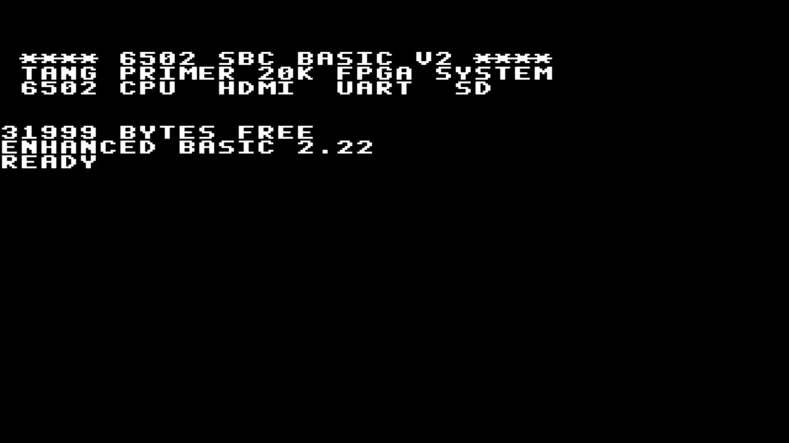
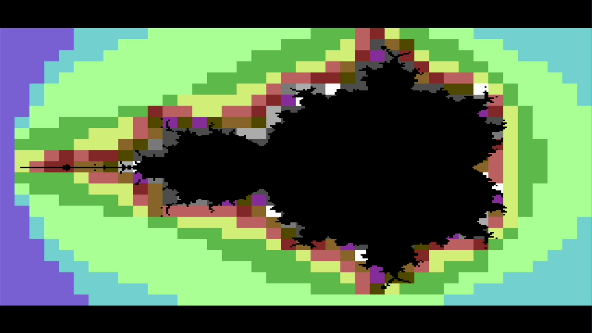
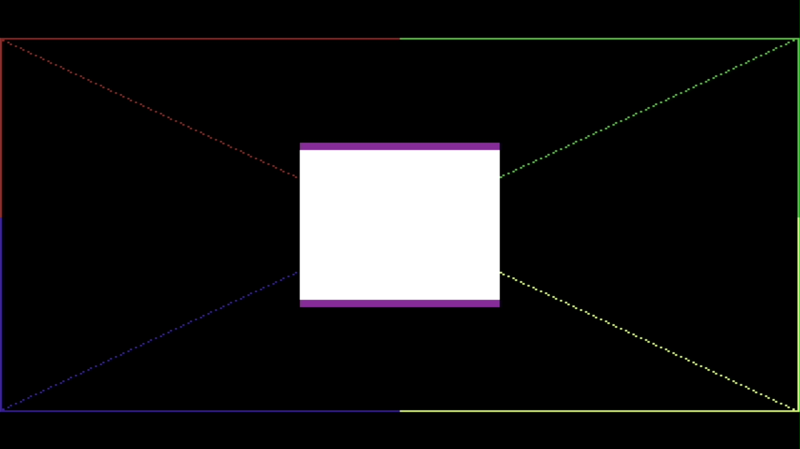
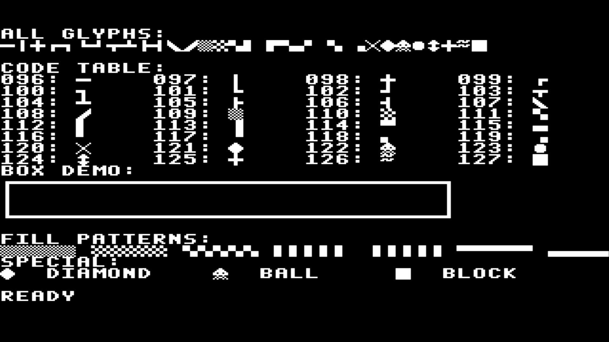
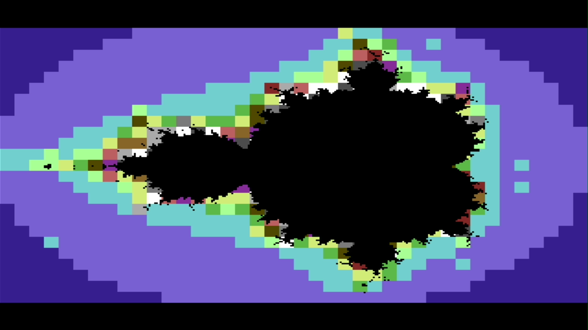
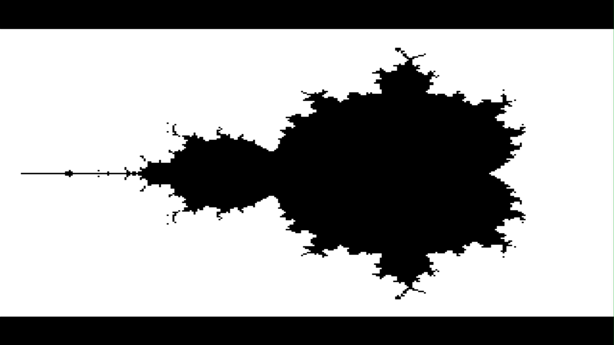
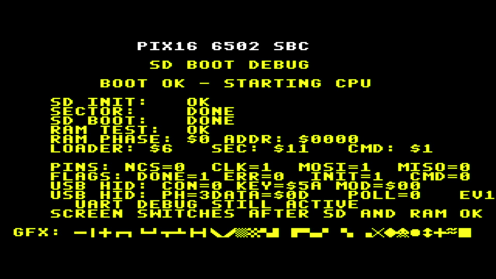
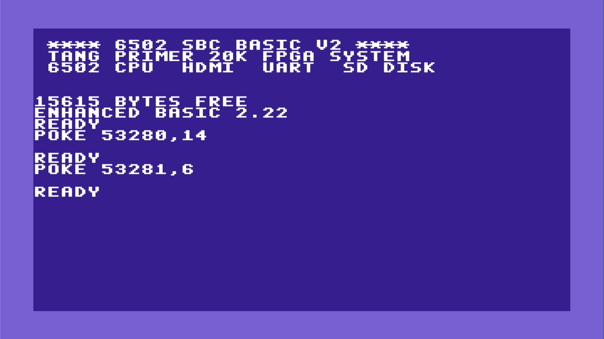
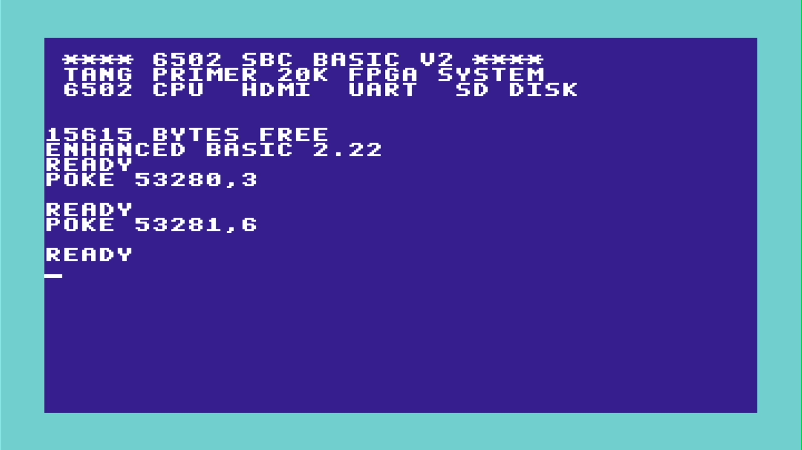

27 MHz
T65 CPU-Takt (effektiv)
CPU, Grafik, Sound, serielle Schnittstellen und ein virtuelles Diskettenlaufwerk — ein vollständiger Single-Board-Computer als FPGA-Design. Bootet unveränderte 6502-Software und teilt sich die Memory-Map mit dem Original-Emulator.

Eine board-unabhängige VHDL-Bibliothek bildet die klassischen Bausteine des 6502-Systems nach. Gleiche Register, gleiche Adressen, gleiche Software.
6502-kompatibler Soft-Core mit eigenem 16-Bit-Bus-Adapter. Läuft über ein cpu_enable-Toggle mit effektiv halbem Systemtakt bis 27 MHz und behandelt IRQ-Vektoren wie der Originalprozessor.
Details ansehen →Textmodus 40×25, ein 320×240-Bitmap mit 16 Farben sowie Legacy-Modi (320×200, 256-Farben RGB332, 64-Farben RGB222) — über C64-artiges Bus-Stealing mit nur 4,8 % Overhead im Textmodus. Dazu C64-kompatible VIC-II-Register: Rahmen/Hintergrund ($D020/$D021) und Raster-Read-back ($D011/$D012).
Details ansehen →Ein recht vollständiges MOS-6581-Modell: 3 Stimmen, kombinierte Wellenformen, zyklusgenaue ADSR und Multimode-Filter. Die Demo spielt originale .sid-Dateien samt ihrem 6502-Player-Code direkt auf der Hardware — gepollt oder über den CIA-Timer, ausgegeben über den PT8211-DAC.
Details ansehen →Timer, GPIO und IRQ-Flags der VIA; vollständige TX/RX-Logik der UART. Dazu ein CIA-1-Timer A ($DC00) für interruptgetriebene Player und eine PS/2-Tastatur mit umschaltbarem DE/US-Layout (USB-HID nur vorbereitet).
Details ansehen →Ein zweites SD-Kärtchen mit FAT32 hält .d64-Images. Die FPGA parst FAT32 und D64 vollständig in Logik und zeigt dem 6502 nur einfache 256-Byte-Sektoren — kein Dateisystem in Software.
Details ansehen →Memory-mapped FPU für vorzeichenbehaftete 32×32-Festkomma-Multiplikation im 8.24-Format — beschleunigt BASIC-Mathematik wie die Mandelbrot-Renderings.
Details ansehen →Keine Renderings — alle Bilder stammen direkt vom HDMI-Ausgang des Tang Primer 20K.








Die FPGA übernimmt FAT32- und D64-Auswertung vollständig. Der 6502 sieht nur ein simples Laufwerk und lädt mit den vertrauten BASIC-Befehlen.
EhBASIC ready. LOAD "$" 0 "TESTDISK " 1A 2A 4 "HELLO" PRG 8 "MANDELBROT" PRG 12 "SOUNDDEMO" PRG READY. LOAD "HELLO" LOADING... $0801-$08C9 CALL 2049 HELLO FROM A REAL 6502! READY.
Aktive Konfiguration des Tang Primer 20K — kompatibel zur emulierten Maschine.
| Adressbereich | Größe | Gerät |
|---|---|---|
| $0000–$3FFF | 16 KB | BRAM Haupt-RAM — Zero-Page, Stack, EhBASIC |
| $4000–$5FFF | 8 KB | BSRAM Haupt-RAM (optional DDR3-Backend) |
| $6000–$7FFF | 8 KB | Fenster in 16-KB-VIC-Framebuffer |
| $8000–$87FF | 2 KB | VIC Text- & Farb-RAM |
| $8800–$880F | 16 B | VIA 6522 |
| $8810–$8813 | 4 B | UART 6551 |
| $8820–$8823 | 4 B | Tastatur (PS/2-Controller; USB-HID nur vorbereitet) |
| $8824 | — | D64 GoDrive Register |
| $88B0–$88BF | 16 B | Math-Coprozessor (8.24 FPU) |
| $9000–$900F | 16 B | VIC-Steuerregister |
| $A000–$CFFF | 12 KB | Shadow-ROM Anwendungsfenster |
| $D000–$D03F | 64 B | VIC-II-Register — Rahmen/Hintergrund + $D011/$D012 Raster |
| $D400–$D41C | 29 B | SID-kompatible Audio-Register (inkl. OSC3/ENV3) |
| $DC00–$DC0F | 16 B | CIA-1 — Timer A + Interrupt-Control |
| $F000–$FFFF | 4 KB | Shadow-ROM Kernel & Vektoren |
Ein 27-MHz-Oszillator speist eine 270-MHz-PLL; daraus entstehen TMDS-, System- und Pixeltakt.
Der board-unabhängige RTL-Kern läuft mit minimalem Board-Glue auf zwei Zielen.
Jeder Baustein ist unabhängig testbar — von der Adressdekodierung bis zum FAT32-Reader.
| Testbench-Bereich | Abdeckung |
|---|---|
| Bus & Reset | Adressdekodierung aller Gerätefenster, Reset-Vektor-Fetch, ROM-skriptgesteuerte Buszyklen |
| VIA 6522 | Port-Masking, IER/IFR, Timer-1-IRQ-Assertion und -Clearing |
| UART 6551 | Status, TX, RX, Overrun, programmierter Reset, RX-IRQ |
| T65 CPU | Boot aus realem ROM, UART-/VIA-Zugriff, IRQ-Handler, Kernel-Smoke-Test |
| D64 / FAT32 | Real-Geometrie-Images werden lazy gelesen, Start-LBAs verifiziert |
| SID & FPU | SID-Audio/Filter beschränkt & nicht-stumm, 8.24-Multiplikation gegen Referenz |
CPU, graphics, sound, serial I/O and a virtual disk drive — a complete single-board computer as an FPGA design. It boots unmodified 6502 software and shares its memory map with the original emulator.
A board-independent VHDL library recreates the classic building blocks of the 6502 system. Same registers, same addresses, same software.
A 6502-compatible soft core with a custom 16-bit bus adapter. A cpu_enable toggle runs it at effectively half the system clock up to 27 MHz, and it handles IRQ vectors exactly like the original processor.
View details →40×25 text mode, a 320×240 16-color bitmap plus legacy modes (320×200, 256-color RGB332, packed 64-color RGB222) — all via C64-style bus stealing, with as little as 4.8 % overhead in text mode. Plus C64-compatible VIC-II registers: border/background ($D020/$D021) and raster read-back ($D011/$D012).
View details →A fairly complete MOS 6581 model: 3 voices, combined waveforms, cycle-accurate ADSR and a multimode filter. The demo plays original .sid files together with their 6502 player code straight on the hardware — polled or CIA-timer driven, out through the PT8211 DAC.
View details →VIA timers, GPIO and IRQ flags; full UART TX/RX logic. Plus a CIA-1 Timer A ($DC00) for interrupt-driven players and a PS/2 keyboard with a switchable DE/US layout (USB HID only prepared).
View details →A second SD card with FAT32 holds .d64 images. The FPGA parses FAT32 and D64 entirely in logic and exposes nothing but plain 256-byte sectors to the 6502 — no filesystem in software.
View details →A memory-mapped FPU for signed 32×32 fixed-point multiplication in 8.24 format — accelerating BASIC math such as the Mandelbrot renders.
View details →Not renders — every image is taken straight from the Tang Primer 20K's HDMI output.
The FPGA handles all FAT32 and D64 parsing. The 6502 only ever sees a simple drive and loads programs with the familiar BASIC commands.
EhBASIC ready. LOAD "$" 0 "TESTDISK " 1A 2A 4 "HELLO" PRG 8 "MANDELBROT" PRG 12 "SOUNDDEMO" PRG READY. LOAD "HELLO" LOADING... $0801-$08C9 CALL 2049 HELLO FROM A REAL 6502! READY.
The active Tang Primer 20K configuration — compatible with the emulated machine.
| Address range | Size | Device |
|---|---|---|
| $0000–$3FFF | 16 KB | BRAM main RAM — zero page, stack, EhBASIC |
| $4000–$5FFF | 8 KB | BSRAM main RAM (optional DDR3 backend) |
| $6000–$7FFF | 8 KB | Window into 16 KB VIC framebuffer |
| $8000–$87FF | 2 KB | VIC text & color RAM |
| $8800–$880F | 16 B | VIA 6522 |
| $8810–$8813 | 4 B | UART 6551 |
| $8820–$8823 | 4 B | Keyboard (PS/2 controller; USB HID only prepared) |
| $8824 | — | D64 GoDrive registers |
| $88B0–$88BF | 16 B | Math coprocessor (8.24 FPU) |
| $9000–$900F | 16 B | VIC control registers |
| $A000–$CFFF | 12 KB | Shadow-ROM application window |
| $D000–$D03F | 64 B | VIC-II registers — border/background + $D011/$D012 raster |
| $D400–$D41C | 29 B | SID-compatible audio registers (incl. OSC3/ENV3) |
| $DC00–$DC0F | 16 B | CIA-1 — Timer A + interrupt control |
| $F000–$FFFF | 4 KB | Shadow-ROM kernel & vectors |
A single 27 MHz oscillator feeds a 270 MHz PLL; from it come the TMDS, system and pixel clocks.
The board-independent RTL core runs on two targets with minimal board glue.
Every block is independently testable — from address decoding to the FAT32 reader.
| Testbench area | Coverage |
|---|---|
| Bus & reset | Address decoding of all device windows, reset-vector fetch, ROM-scripted bus cycles |
| VIA 6522 | Port masking, IER/IFR, Timer-1 IRQ assertion and clearing |
| UART 6551 | Status, TX, RX, overrun, programmed reset, RX IRQ |
| T65 CPU | Boot from real ROM, UART/VIA access, IRQ handler, kernel smoke test |
| D64 / FAT32 | Real-geometry images read lazily, start LBAs verified |
| SID & FPU | SID audio/filter bounded & non-silent, 8.24 multiply against reference |